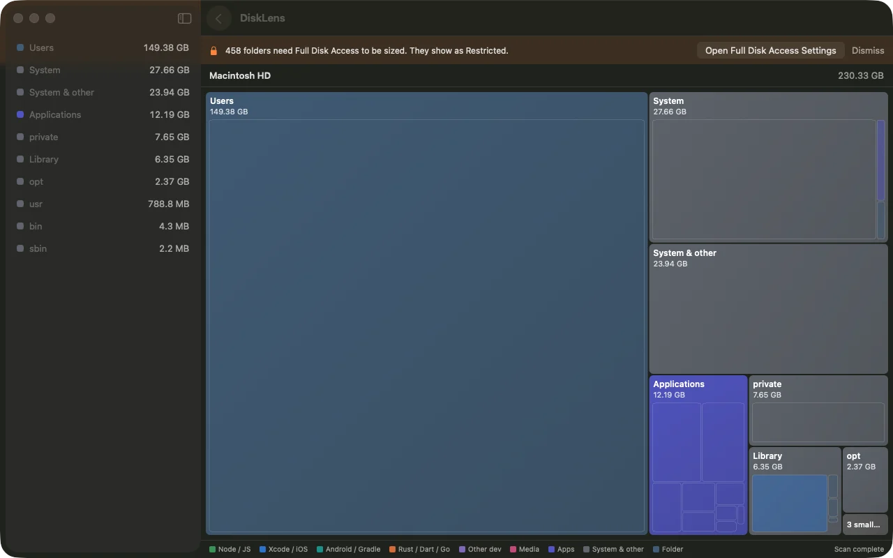
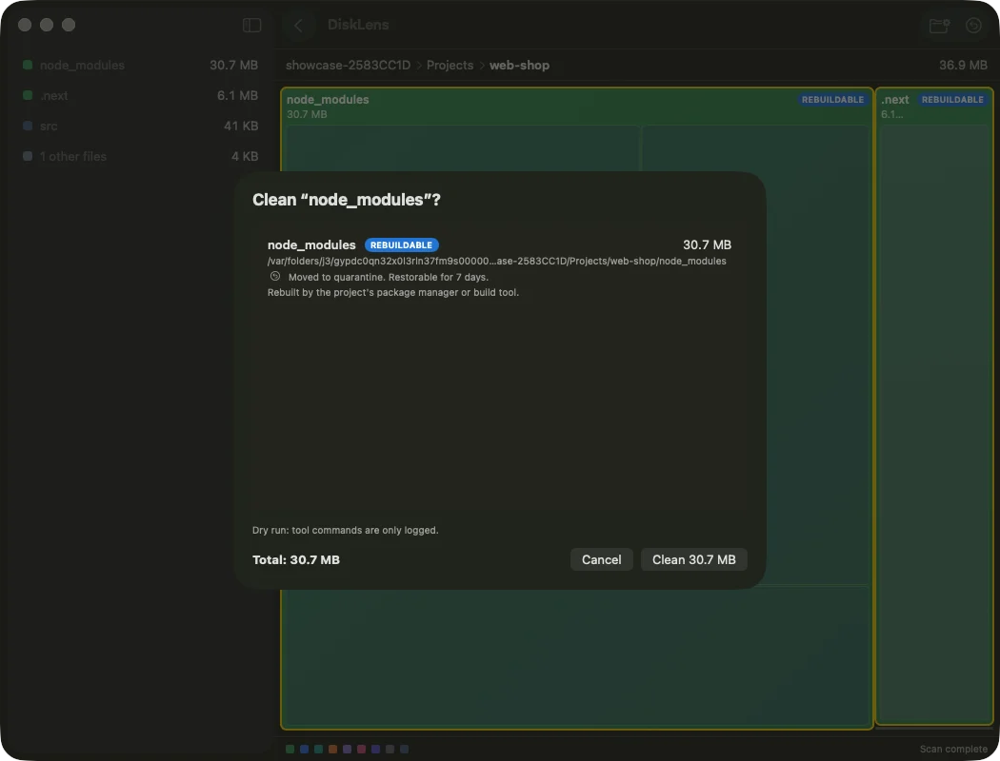
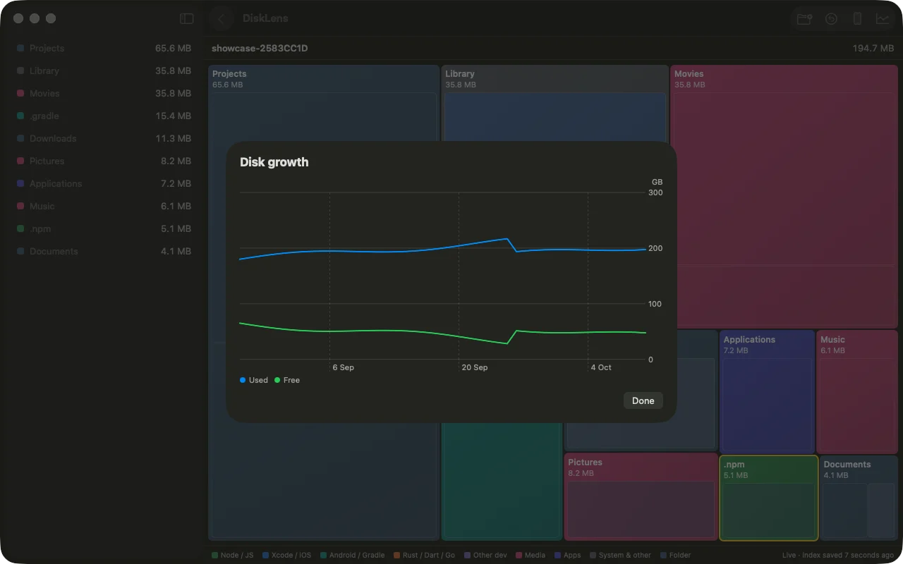

A treemap of your whole Mac, built for developers. Find the 40 GB of DerivedData, clear it, and undo if you change your mind.



Every folder is a box sized by what it really takes. First boxes appear in under a second; a million files in about twelve.
Each cleanup rule shows exactly what it removes and how much it frees. Nothing runs until you say so.
A timeline shows which folders ballooned this week, so the next surprise is not a full disk.